What began as an ordinary walk through the old town gradually changed direction. I first looked for people and moments in the streets, but a few open historic residences caught my attention. I slowed down and began looking instead at the spaces and details that are easy to overlook.
I made another visit to Dangkou Ancient Town on September 4, 2026. There were still very few visitors. For street photography, I often feel that people are an essential part of the frame, giving a scene its sense of life. So, at first, I wandered through the lanes looking for those small encounters.
Then I noticed that several old residences I had never visited before were open that day. Rather than continuing to wait for moments on the street, I decided to step inside. The direction of the walk changed: my attention shifted from everyday street scenes to the objects, doors and windows inside the old houses, and to the way light settled into those spaces.
Most of the houses were quiet, with hardly any visitors. That gave me time to notice details I might otherwise have walked past.
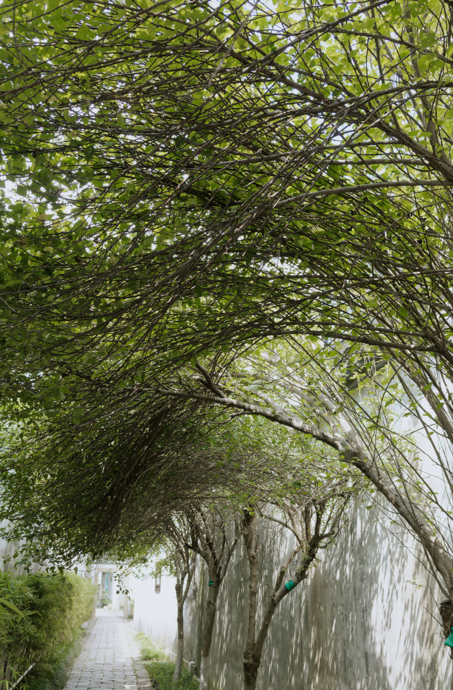
午后的光线依然强烈，枝叶却在小路上方交织成一段树荫，让这条路显得格外幽静。The afternoon light was still strong, but the branches and leaves formed a canopy over the path, giving it a quiet, secluded feel.
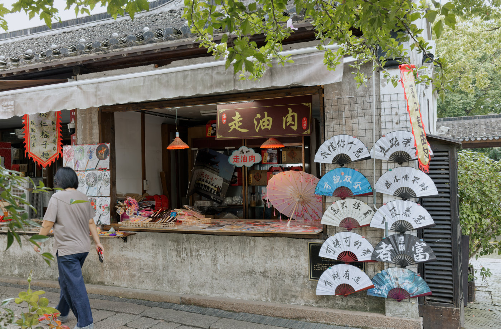
走油肉是荡口古镇颇有代表性的地方风味。街边的店铺，也构成了古镇日常的一部分。Braised pork is one of Dangkou's local specialties. Shops like this are part of the town's everyday character.几位游客在写着“荡口如诗”的墙边拍照。这样的寻常一幕，也让古镇有了些许生活气息。A few visitors stop for photographs beside a wall bearing the words “Dangkou, Like a Poem.” An ordinary moment, but one that brings a little life to the old town.
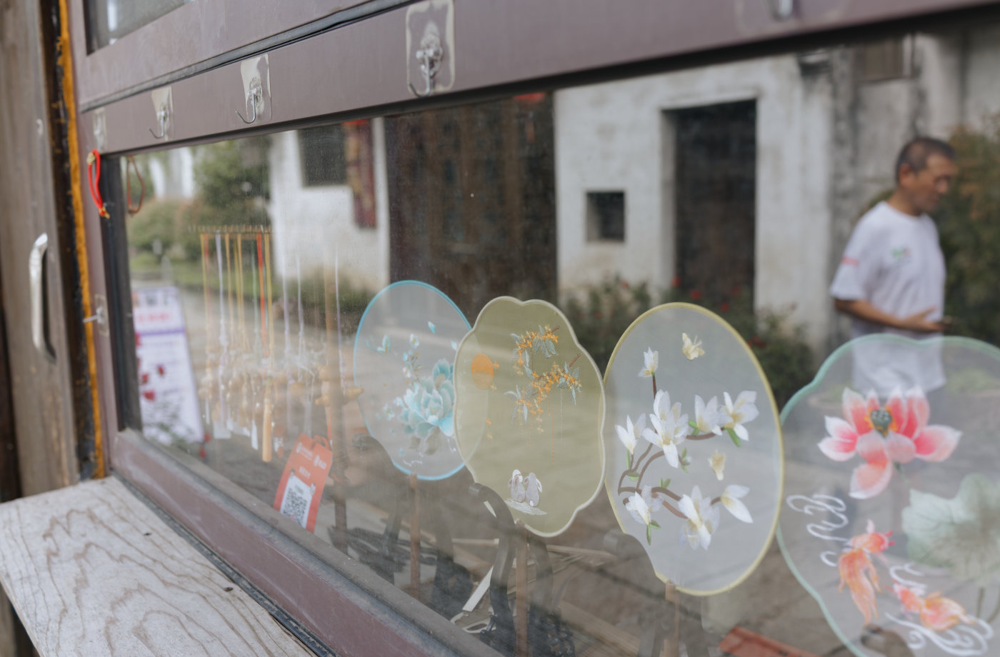
路过一家关着门的店铺，橱窗里的中式扇子与玻璃上叠映的行人，构成了一个有趣的画面。A closed shop caught my eye: traditional Chinese fans in the window overlapped with the reflections of people passing by.
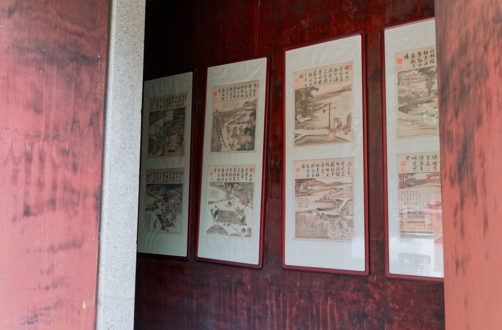
走进一处旧宅，赭红色的门框内，几幅装裱好的画作整齐地排列着。Inside one of the old residences, several framed prints hang in a row within a deep reddish-brown doorway.
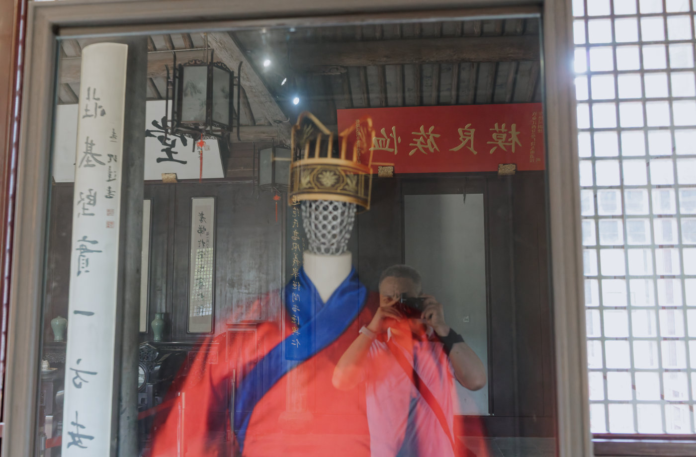
隔着玻璃拍摄时，我意外地在画面里看到了自己的倒影。:)While photographing through the glass, I unexpectedly found my own reflection in the frame. :)
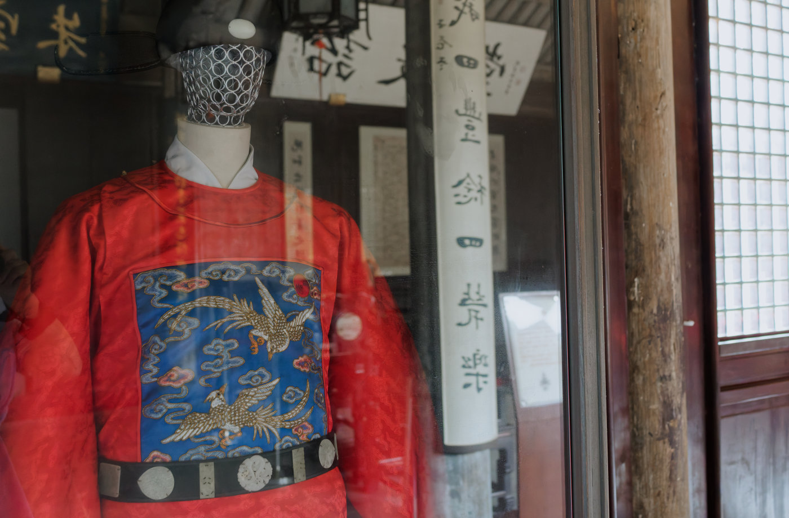
玻璃展柜里，一尊身着官服的人像模型安静地陈列着。A figure dressed in an official robe stands quietly inside a glass display case.
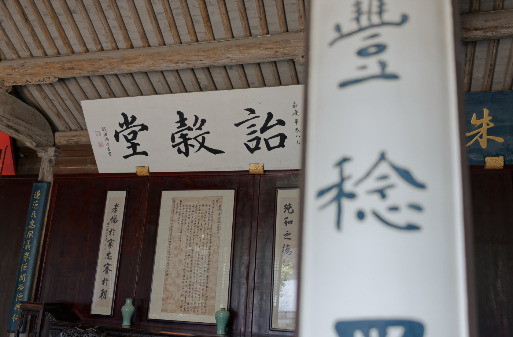
抬头看到厅堂里的匾额与书法。老宅中的这些陈设，让空间多了几分历史的痕迹。Looking up, I noticed the calligraphy and plaque in the main hall. Details like these give the old residence a sense of history.
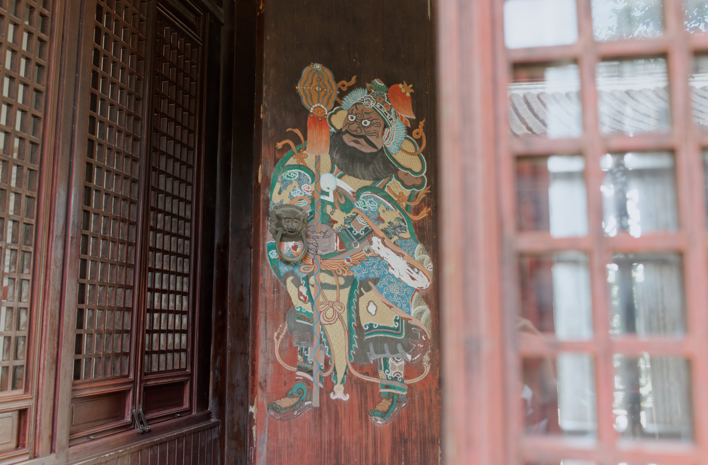
走出厅堂时，门板上的门神彩绘吸引了我的注意。As I left the hall, the brightly painted guardian figure on the wooden door caught my attention.
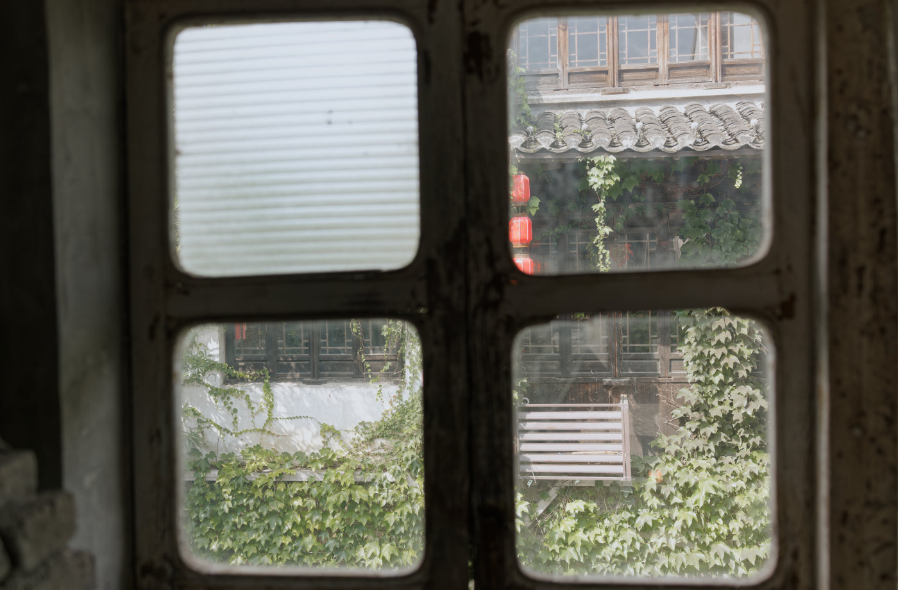
从室内透过四格窗向外看，窗框把庭院景色分成了四幅小画。Looking out from inside through a four-pane window, the frame divides the courtyard into four small pictures.
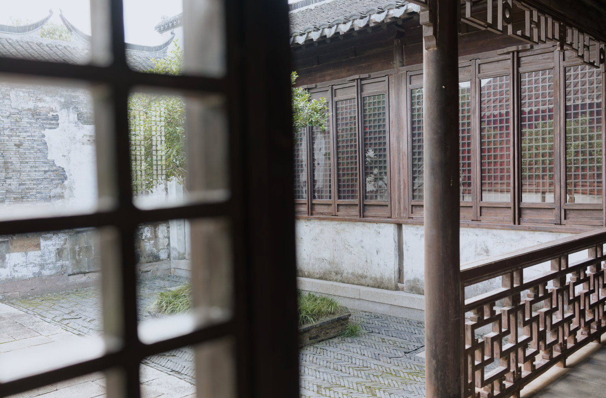
院落另一侧，方形木窗格与门廊交错排列，形成了富有节奏感的几何结构。On the other side of the courtyard, square wooden lattice windows and the covered walkway form a pleasing geometric rhythm.
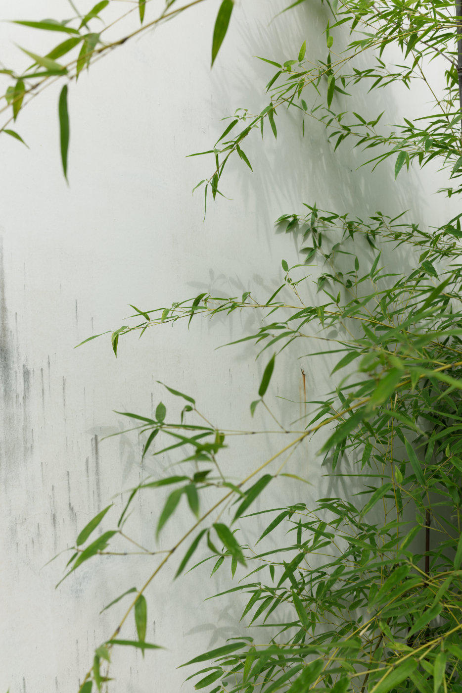
庭院一角，竹叶在白墙上投下轻柔的影子。比起建筑本身，我更喜欢这样的细微变化。In a corner of the courtyard, bamboo leaves cast delicate shadows on the white wall. I was drawn less to the architecture itself than to this quiet interplay of light and shadow.
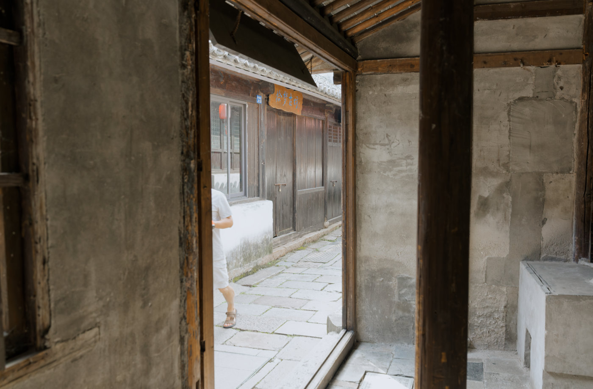
从一处沿街店铺向外看，室内木柱与门外明亮的街巷形成明暗对照。我想记录下这段自然的光线过渡。Looking out from a street-side shop, the dark wooden columns contrast with the bright lane outside. I wanted to capture that natural transition from shadow to light.
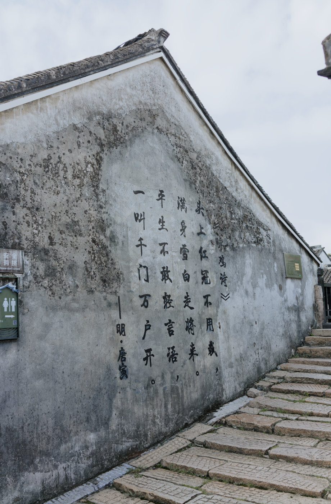
灰白的墙面上写着唐伯虎的《咏鸡诗》。斑驳的墙体，也让文字多了几分时间感。Tang Yin's poem “Ode to the Rooster” is written on the weathered grey wall. The worn surface gives the words an added sense of time.
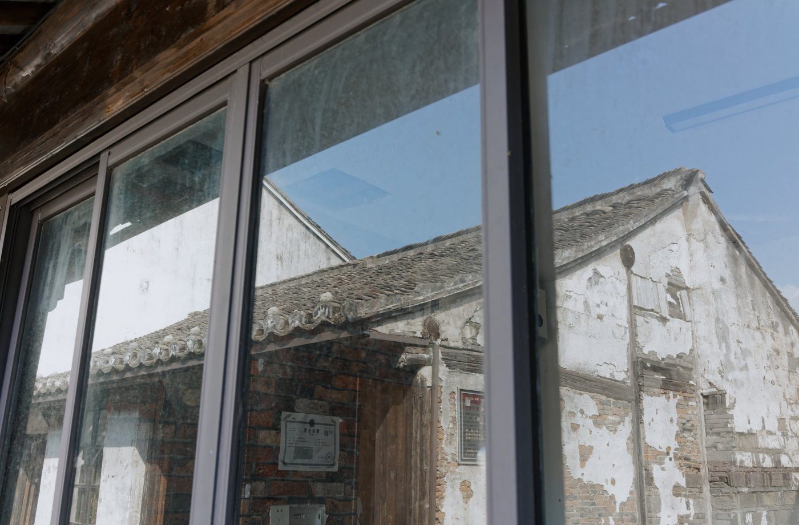
透过现代门窗，旧屋与蓝天同时映在玻璃上，新旧景象交叠在一起。Through a modern window, the old house and blue sky are reflected together in the glass, bringing old and new into a single frame.“水深危险”的警示牌出现在安静的水巷边，醒目的暖色与周围环境形成对比，也为这次漫步留下一个轻巧的句点。A “Deep Water” warning sign stands beside a quiet canal. Its warm, vivid colour contrasts with the surroundings, offering a small closing note to the walk.